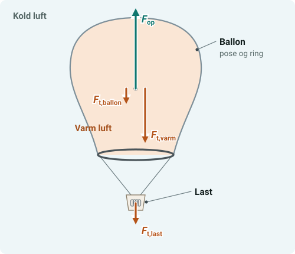

Modul 4 · Fysik › Modulplan › Arbejdsark
Varmluftballoner
I modul 3 var det hydrogen, der løftede. I dag er det varm luft, som I skal bruge i konkurrencen. Varm luft fylder mere end kold luft, så en liter varm luft vejer mindre. Teorien står i fysiks tillæg Varmluftsballon (Erik Vestergaard, matematikfysik.dk), som I får af jeres fysiklærer. Til sidst bygger I jeres egen ballon.
Teori: Varm luft er lettere
Fra modul 3 er densiteten af en gas ρ = p · MR · T. Luften i ballonen og luften udenfor har samme tryk og samme molarmasse. Kun temperaturen er forskellig. Derfor er massen af den varme luft i ballonen mvarm = mkold · TkoldTvarm, hvor mkold er massen af den kolde luft, ballonen skubber væk.
Den varme luft er kun lidt lettere: Er det 20 °C udenfor og 50 °C i ballonen, vejer den varme luft 91 % af den kolde.
1Kræfterne på en varmluftballon

Figuren har samme navne som fysiks tillæg. Ballonen svæver med den største last, den kan bære.
Skriv Newtons 1. lov for ballonen. Regn kræfter opad som positive.
Skriv kræfterne med masser, del med g, og vis, at lasteevnen er mmax last = mkold − mvarm − mballon. Det er formel (4) i tillægget.
Hjælp
Opdriften er tyngden af den fortrængte kolde luft: Fop = mkold · g.
2Tillæggets opgaver
Regn opgave 1 og 2 i tillægget Varmluftsballon. Brug trykket 1,013 · 105 Pa, M(luft) = 0,02896 kg/mol og R = 8,314 J/(mol · K).
3En rigtig varmluftballon
En varmluftballon til fire personer har et volumen på 2500 m3. Hylsteret, kurven, brænderen og gassen vejer tilsammen 350 kg. En morgen er luften 15 °C, og luften i ballonen er 100 °C.
Beregn massen af den kolde luft, ballonen skubber væk, og massen af den varme luft i ballonen.
Beregn lasteevnen. Kan fire personer på 75 kg komme med?
Hvorfor flyver man helst om morgenen, når det er koldt?
4Posen over lysene
Læreren holdt en pose over 10 fyrfadslys. Posen rummer 200 L = 0,200 m3 og vejer 20 g med ringen. Luften i lokalet er 20 °C, og luften i posen blev 50 °C.
Beregn posens lasteevne i gram.
Hjælp
Ved 20 °C er ρ(luft) = 1,20 kg/m3. Find først mkold, så mvarm, og brug formlen fra opgave 1.
I konkurrencen har hver gruppe også kun 10 lys. Hvad kan I gøre for at løfte mere? Giv tre forslag.
Hvorfor er det ikke bare bedst med en kæmpestor pose?
Hjælp
Tænk på, hvad en større pose vejer, og hvor meget varme den taber gennem plasten.
Teori: Hvor varm bliver luften?
Lysene giver posen en effekt P, og posen taber varme gennem plasten. Jo større overfladen A er, og jo varmere luften er, jo mere varme taber den. Når luften ikke bliver varmere, er tabet lige så stort som effekten: P = U · A · (Tvarm − Tkold).
U fortæller, hvor let plasten slipper varmen igennem. For en tynd pose er U ca. 3 W/(m2 · K).
5Byg jeres ballon
Byg den ballon, I vil stille op med i konkurrencen. Brug opgave 4 og formlen for lasteevnen til at vælge størrelse og plast.
- Ballonen skal rumme mindst 100 L. En lille ballon bliver for varm over lysene, og plasten kan smelte.
- Åbningen holdes åben af en ring af ståltråd, som lasten hænger i.
- I må kun bruge materialerne fra materialebordet: tynd plast, tape, ståltråd og papirclips.
- Tape vejer også. Brug så lidt som muligt, men sørg for, at ballonen er tæt.
| mballon med ring i g | Omkreds O i m | Højde h i m |
|---|---|---|
Lektie til næste gang: Byg ballonen færdig, hvis I ikke nåede det, og tag den med til konkurrencen.